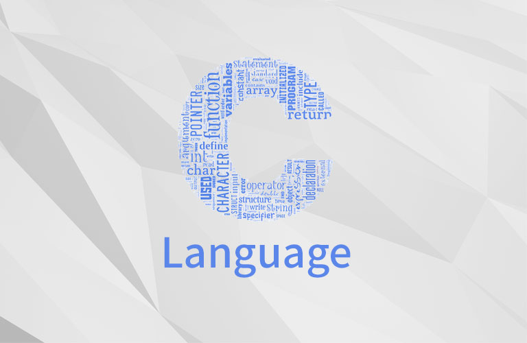

일반적인 프로그래머는?
앞서 말한대로, 일반적인 프로그램과 웹사이트는 구동 방식, 언어가 다릅니다. 먼저 일반적인 프로그래머에 관한 것부터 알아보도록 하겠습니다.
|  |
 |
 |
| 대표적인 프로그래밍 언어 중 하나인 C언어 |
사용자 친화 언어, 파이썬 |
세계에서 가장 유용한 개발 플랫폼, 자바 |
우리가 사용하는 컴퓨터, 스마트폰, 게임기, 하다못해 시계와 세탁기, 냉장고까지. 모든 전자기기에는 알게 모르게 소프트웨어가 내장되어 있습니다. 그 중 흔히 사용하는 컴퓨터와 스마트폰을 보면, (물론 다른 기기에도 있지만) 운영체제와 기기 구동을 위한 각종 프로그램이 내장되어 있는 경우가 있습니다. 이러한 프로그램을 통틀어 우리가 흔히 설치할 수 있는 여러가지 프로그램들까지. 이러한 프로그램들을 개발하는 사람들을 흔히 크게 프로그래머라는 범주로 지칭하죠. 이러한 프로그램들은 위에 있는 C언어, 그 외에도 Java, 파이선과 같은 고급 언어에서 어셈블리와 같은 저급 언어, 스크래치와 같은 블록 언어까지 다양한 언어를 이용해서 제작됩니다. 이러한 언어들을 사용해 프로그램을 제작하는 사람들을 개발자, 프로그래머라고 지칭하게 됩니다.